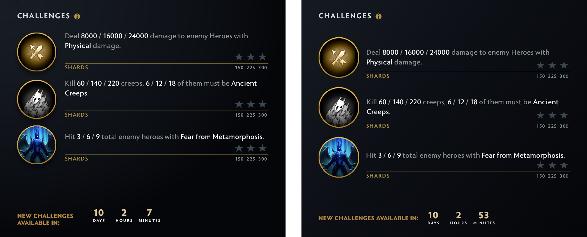

UI Issues
The timer text is a copy paste from the old design, not matching the new design. Hero Challenges also have different heights(see videos further down the page) depending on the number of lines in the description. Please take advantage of the available space to fix these issues.
CURRENT
POSSIBLE FIX

Examples of heights different between challenges. This wasn't the case in the old UI.
When you reach a Hero Level Tier and the last bit of experience comes from Relics, the 'Level Up' pop-up will not appear. Which is unsatisfying and disappointing.
If you're like me and refreshes all the challenges at once, you will experience Dota crashing while cycling through them. This started happening after 7.36 and it has been tested on two different computers(happens on both). It worked fine for 6 years before that.